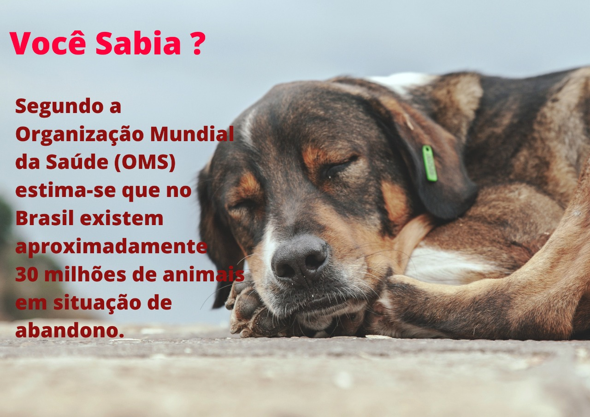
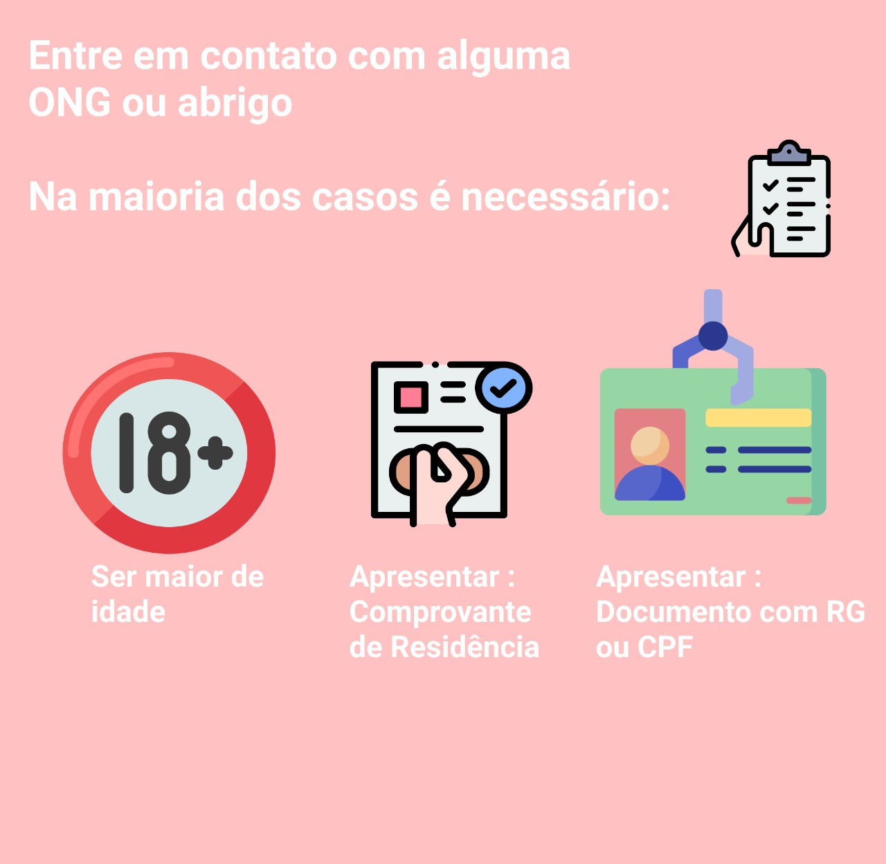
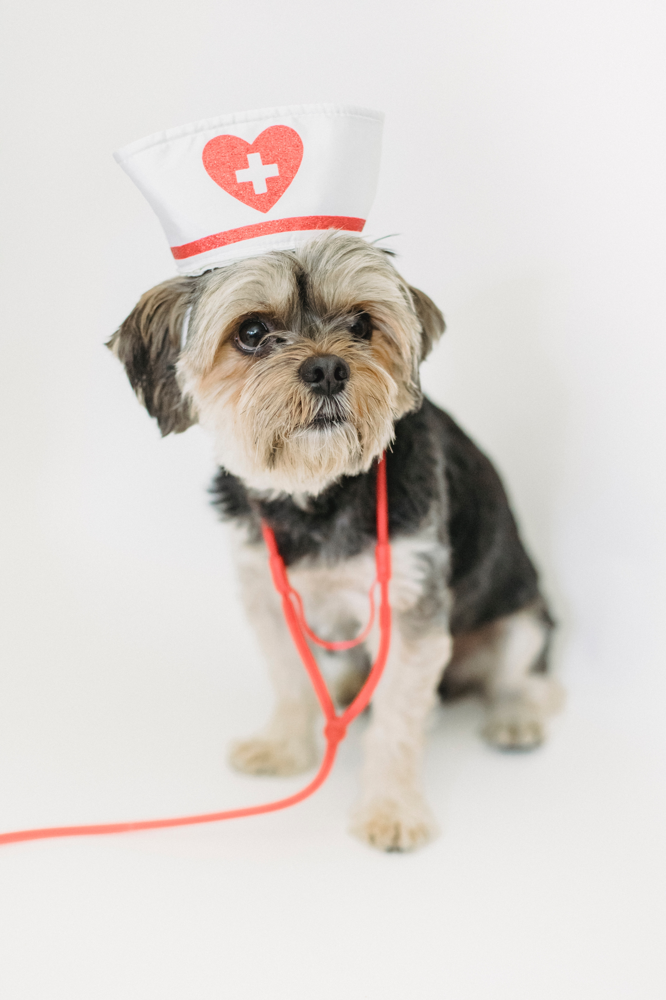
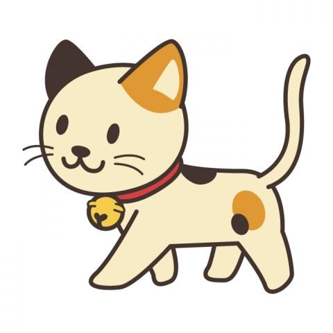
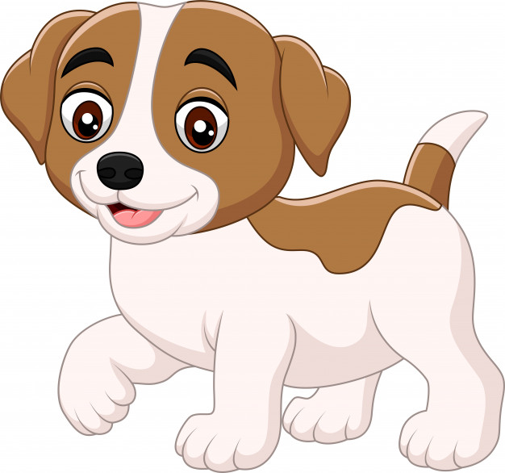

O que é preciso para adotar um animal?

Onde posso adotar um animal?
Existem inúmeros abrigos e ONG’s espalhados pelo Brasil que fazem um trabalho íntegro e totalmente em prol dos animais. Abrigos licenciados pelo município ou projetos sociais de ONG’s são a melhor forma de adotar um animalzinho de forma segura

O animal adotado pode transmitir doenças?
A maioria dos animais dos abrigos (legais) recebem constantemente assistência médico-veterinária, sendo examinados e tomando as principais vacinas, como a antirrábica e a vacina contra a giardíase. Após adotar o animal, é recomendável levá-lo em um veterinário para ter certeza que o ele está saudável e sem nenhum problema.

E aí, que tal fazer a diferença na vida de um animal?

Abrigo:
Cidade:
